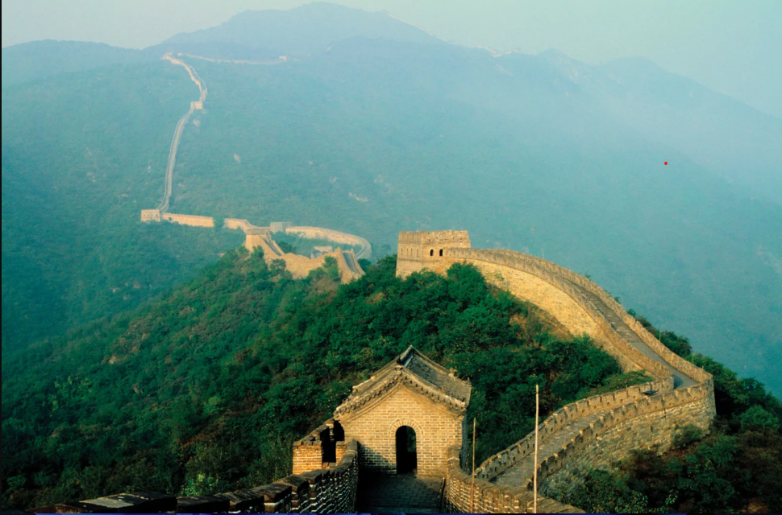
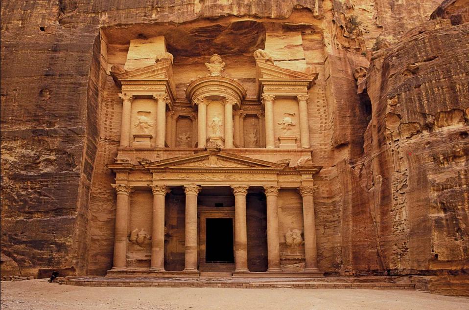
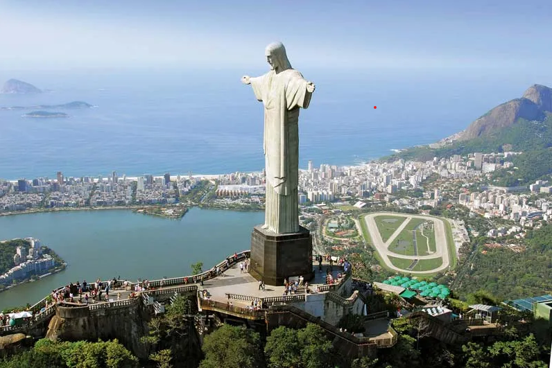
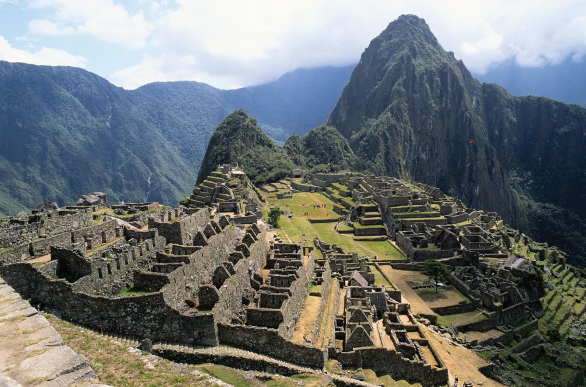
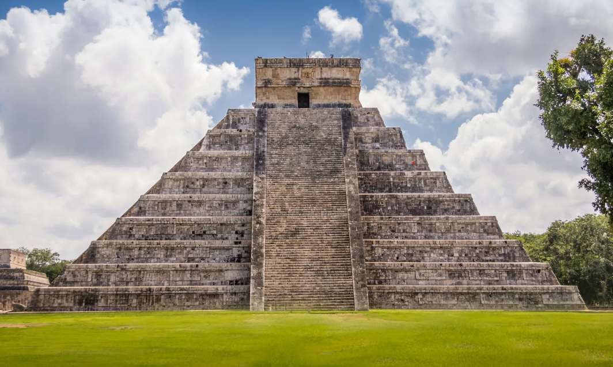
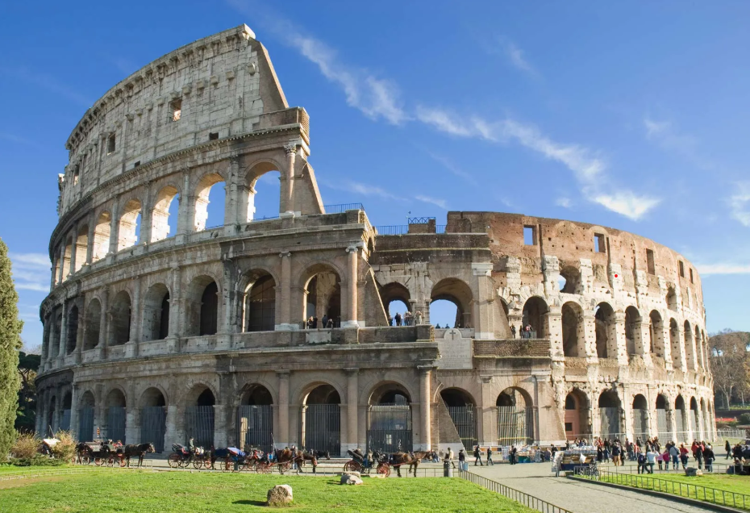
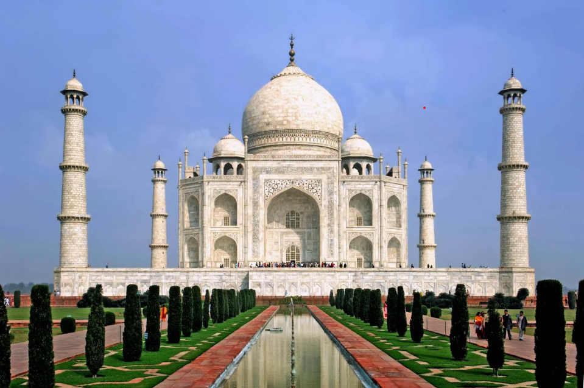

Overview
Human history is filled with extraordinary creations structures so magnificent that they’ve stood as symbols of human ambition, faith, and creativity. The Seven Wonders of the World are a celebration of architectural brilliance, historical significance, and the cultures that shaped our world. There have been many lists of “wonders” throughout history. The Ancient Seven Wonders were identified by Greek travelers over 2,000 years ago. However, most of those structures, except the Great Pyramid of Giza, no longer exist. In 2007, the New Seven Wonders of the World were chosen through a global poll by over 200 countries, recognizing timeless landmarks that continue to inspire humanity. This website takes you on a virtual tour of these seven breathtaking wonders their stories, builders, legends, and legacies.
The Great Wall of China (China)
Overview:
The Great Wall of China is the longest structure ever built by humans, stretching across northern China’s rugged mountains, deserts, and plains. It was originally constructed to protect Chinese states from invasions and raids by nomadic tribes from the north.
Historical Background:
Construction began during the 7th century BC, with various dynasties adding sections over the centuries. The most famous parts were built by the Ming Dynasty (1368–1644 AD) using bricks and stones instead of tamped earth. Over time, the wall became more than just a defense system it served as a symbol of national unity and strength.
Architecture & Engineering:
The Wall includes watchtowers, barracks, beacon towers, and fortresses. It spans more than 21,000 kilometers (13,000 miles), winding over mountains, rivers, and deserts. Workers, soldiers, and prisoners built it by hand, often in harsh conditions.
Cultural Significance:
It’s a UNESCO World Heritage Site and one of China’s proudest symbols. The phrase “Not a true hero until you climb the Great Wall” (不到长城非好汉) reflects its importance in Chinese culture.
Interesting Fact:
The Wall is often said to be visible from space, but this is a myth it’s visible only under certain conditions with aid.
Petra (Jordan)
Overview:
Hidden in the desert cliffs of southern Jordan, Petra also called the “Rose-Red City” was once the capital of the Nabataean Kingdom. It’s world-famous for its rock-cut architecture and advanced water management systems that supported a thriving city in the desert.
Historical Background:
Built around 312 BC, Petra became a vital trade hub linking Arabia, Egypt, and the Mediterranean. Caravans brought spices, silk, and incense through its gates. It flourished for centuries before being abandoned after earthquakes and trade route changes.
Architecture & Engineering:
Standing 30 meters tall (98 ft) atop Mount Corcovado (700 meters above sea level), the statue is made of reinforced concrete and covered with small triangular soapstone tiles. Each tile was placed by hand, giving it a smooth, luminous surface.
Cultural Significance:
It’s not only a religious symbol but also a representation of Brazil’s openness and warmth toward all cultures. At night, the statue is illuminated, visible from nearly every part of Rio.
Interesting Fact:
Lightning strikes the statue several times a year; its right thumb was once damaged and had to be repaired.
Christ the Redeemer (Brazil)
Overview:
Overlooking the vibrant city of Rio de Janeiro, Christ the Redeemer (Cristo Redentor) is one of the world’s most recognizable statues. With open arms extending over the city, it symbolizes peace, forgiveness, and the embrace of humanity.
Historical Background:
The idea for the statue was proposed in the 1850s but realized only in 1922, as part of Brazil’s centennial independence celebration. Construction was completed in 1931, designed by Brazilian engineer Heitor da Silva Costa and sculpted by Paul Landowski of France.
Architecture & Engineering:
Standing 30 meters tall (98 ft) atop Mount Corcovado (700 meters above sea level), the statue is made of reinforced concrete and covered with small triangular soapstone tiles. Each tile was placed by hand, giving it a smooth, luminous surface.
Cultural Significance:
It’s not only a religious symbol but also a representation of Brazil’s openness and warmth toward all cultures. At night, the statue is illuminated, visible from nearly every part of Rio.
Interesting Fact:
Lightning strikes the statue several times a year; its right thumb was once damaged and had to be repaired.
Machu Picchu (Peru)
Overview:
Machu Picchu, the “Lost City of the Incas,” is a mysterious ancient city perched high in the Andes Mountains. Built in the 15th century by the Inca Emperor Pachacuti, it’s one of the best-preserved examples of Incan civilization.
Historical Background:
Archaeologists believe Machu Picchu served as a royal estate, religious site, or astronomical observatory. Its remote location kept it hidden from Spanish conquerors, allowing it to remain intact until rediscovered by Hiram Bingham in 1911.
Architecture & Engineering:
The site features more than 200 structures, including temples, terraces, fountains, and houses all built using dry-stone construction, where stones are fitted without mortar. The precision of this technique has helped the site withstand earthquakes.
Cultural Significance:
Machu Picchu reflects the Incas’ deep connection to nature and their spiritual beliefs. It aligns perfectly with celestial events, such as solstices, highlighting their astronomical expertise.
Interesting Fact:
It is located 2,430 meters (7,970 feet) above sea level, surrounded by clouds and lush green peaks.
Chichen Itza (Mexico)
Overview:
Chichen Itza was once one of the greatest cities of the Mayan civilization, blending architectural, astronomical, and religious importance. It’s now Mexico’s most visited archaeological site.
Historical Background:
Established between 600–900 AD, it was a political, cultural, and commercial center for the Mayans. The city’s structures reflect their advanced understanding of mathematics and celestial cycles.
Architecture & Engineering:
Its most famous building, El Castillo (Temple of Kukulcán), is a step pyramid dedicated to the feathered serpent god. The pyramid has 365 steps one for each day of the year. During the spring and autumn equinoxes, the shadow of a serpent appears to slither down its steps, an incredible alignment of architecture and astronomy.
Cultural Significance:
The city also includes a Great Ball Court, temples, and an observatory (El Caracol) that show how the Mayans used architecture to mark cosmic events.
Interesting Fact:
The pyramid was built twice a smaller structure lies hidden inside the larger one.
The Roman Colosseum (Italy)
Overview:
The Colosseum, or Flavian Amphitheater, is one of ancient Rome’s greatest engineering achievements. Once a grand arena for public spectacles and gladiator games, it remains a symbol of Rome’s power and sophistication.
Historical Background:
Construction began under Emperor Vespasian in 70 AD and was completed by Emperor Titus in 80 AD. It hosted gladiator combats, mock sea battles, and theatrical performances.
Architecture & Engineering:
Built using stone and concrete, the Colosseum measures 189 meters long, 156 meters wide, and 50 meters high. It could seat up to 80,000 spectators. Its complex system of tunnels (the hypogeum) housed animals, fighters, and stage machinery.
Cultural Significance:
Despite its violent past, the Colosseum symbolizes endurance, culture, and the architectural mastery of Rome. Today, it stands as a monument to both glory and humanity’s thirst for entertainment.
Interesting Fact:
Earthquakes and stone looting damaged it over time, but about two-thirds of the structure still stands.
The Taj Mahal (India)
Overview:
The Taj Mahal in Agra, India, is one of the most romantic and beautiful monuments ever built. Commissioned by Emperor Shah Jahan in memory of his wife Mumtaz Mahal, it’s an eternal symbol of love and devotion.
Historical Background:
Construction began in 1632 and took over 20 years, with more than 20,000 artisans working under architect Ustad Ahmad Lahauri. The emperor wanted to create a paradise on earth a tomb as beautiful as his beloved.
Architecture & Engineering:
The Taj Mahal combines Persian, Islamic, and Indian styles. The central dome rises 73 meters (240 feet), surrounded by four minarets. White marble walls are decorated with intricate floral carvings, calligraphy, and gemstones. The monument changes color with sunlight pink at dawn, white by day, and golden under moonlight.
Cultural Significance:
It represents eternal love and artistic perfection. Declared a UNESCO World Heritage Site, it’s one of the most visited landmarks in the world.
Interesting Fact:
The minarets are slightly tilted outward so that if they ever collapse, they will fall away from the main tomb.
The Great Wall of China
Petra
Christ the Redemeer
Machu Picchu
Chichen Itza
The Roman Colosseum
The Taj Mahal
Fun Facts About the Seven Wonders of the World
Great Wall of China (China)
- The Great Wall isn’t a single continuous wall it’s made up of many sections built by different dynasties over centuries.
- It stretches over 21,000 kilometers (13,000 miles), making it the longest structure ever built by humans.
- Contrary to popular belief, it cannot actually be seen from space with the naked eye.
- Over 1 million workers are believed to have helped construct it.
- The wall was originally built not only for defense but also to control immigration and trade along the Silk Road.
Petra (Jordan)
- Petra’s famous Treasury (Al-Khazneh) is not a treasury at all—it’s a tomb for a Nabataean king.
- The entire city was carved directly into pink sandstone cliffs, giving it the nickname “The Rose City.”
- The Nabataeans, who built Petra, were experts in water engineering—they built dams, tunnels, and water storage systems in the desert.
- The city was lost for centuries and rediscovered by Swiss explorer Johann Ludwig Burckhardt in 1812.
- Petra has appeared in many films, including Indiana Jones and the Last Crusade.
Christ the Redeemer (Brazil)
- The statue stands 30 meters tall (98 feet), not including its 8-meter (26-foot) pedestal.
- It weighs around 635 metric tons and took 9 years to complete (1922–1931).
- The statue’s arms stretch 28 meters (92 feet) wide.
- It was made from reinforced concrete and covered with soapstone tiles, chosen for their durability and smooth texture.
- It was struck by lightning multiple times; repairs were made to maintain its condition.
Machu Picchu (Peru)
- Machu Picchu means “Old Peak” in the Quechua language.
- It is located nearly 2,430 meters (7,970 feet) above sea level in the Andes Mountains.
- Built without mortar, the stones fit together so precisely that even a credit card can’t fit between them.
- Historians still don’t know the exact purpose of Machu Picchu—it may have been a royal estate or religious site.
- It was rediscovered in 1911 by American explorer Hiram Bingham.
Chichen Itza (Mexico)
- The pyramid “El Castillo” (Temple of Kukulcán) was built to align with the spring and autumn equinoxes—creating a shadow that looks like a serpent slithering down the steps.
- The pyramid has 365 steps—one for each day of the year.
- When you clap your hands in front of the pyramid, the echo sounds like the chirp of a sacred bird, the quetzal.
- Chichen Itza was a major Mayan political and economic center between 600–900 AD.
- The site’s “Great Ball Court” is the largest in Mesoamerica, measuring 168 meters long.
The Roman Colosseum (Italy)
- The Colosseum could hold 50,000 to 80,000 spectators—like a modern sports stadium.
- It featured retractable awnings to shade the audience from the sun.
- The arena floor had trapdoors and elevators to bring animals and fighters up from underground.
- Despite being damaged by earthquakes and looting, it remains one of the best-preserved ancient structures in Rome.
- During its prime, it hosted gladiator fights, naval battles, and public executions.
Taj Mahal (India)
- The Taj Mahal was built by Emperor Shah Jahan in memory of his wife Mumtaz Mahal, who died during childbirth.
- Over 20,000 workers and 1,000 elephants were used to complete the construction.
- The white marble changes color depending on the time of day—pink at dawn, white at midday, and golden under moonlight.
- It took 22 years to complete (1632–1653).
- The Taj Mahal is perfectly symmetrical, except for Shah Jahan’s own tomb, which was added later and slightly off-center.